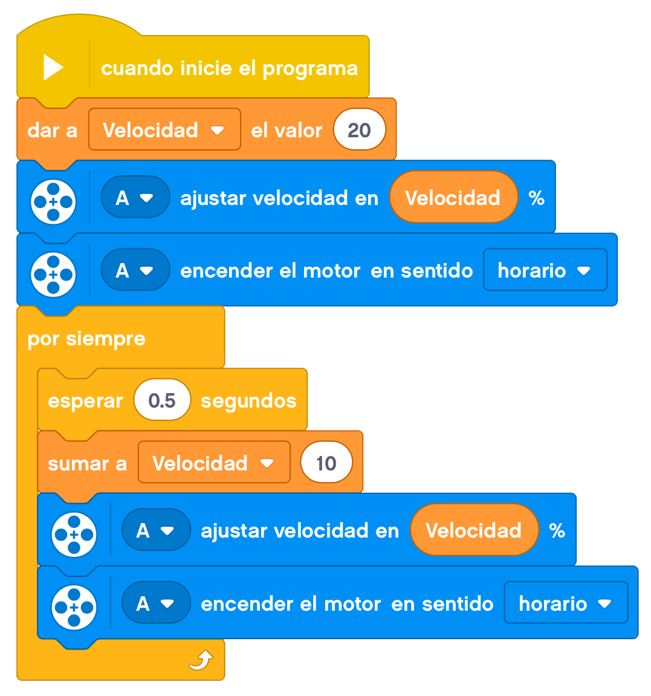

Vamos a construir un molino de viento estable en esta actividad.
Actualmente, los molinos eólicos son una gran fuente de energía limpia y fundamental a la hora de cuidar
nuestro planeta.

En este caso construiremos un molino de viento pero que va a funcionar de una manera distinta. En nuestro
caso, un motor será el que mueva las hélices.
Le colocaremos un motor en la base y tendremos que trasladar ese movimiento a la parte de las aspas del molino.
A continuación os mostramos un montaje de ejemplo de esta actividad.
Conectamos un cable al motor y a una de las salidas identificadas con una letra y ya tendríamos nuestro
molino terminado.
Para programarlo, lo que harenos será ir subiendo de velocidad para que los engranajes no sufran un gran
empuje inicial y se puedan atascar.

Y ahora podemos hacer funcionar el molino heólico.